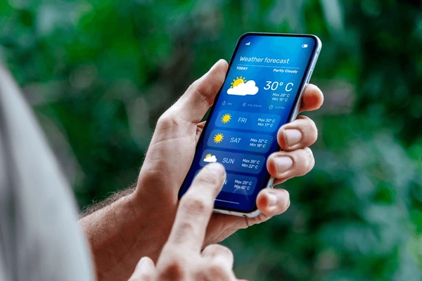
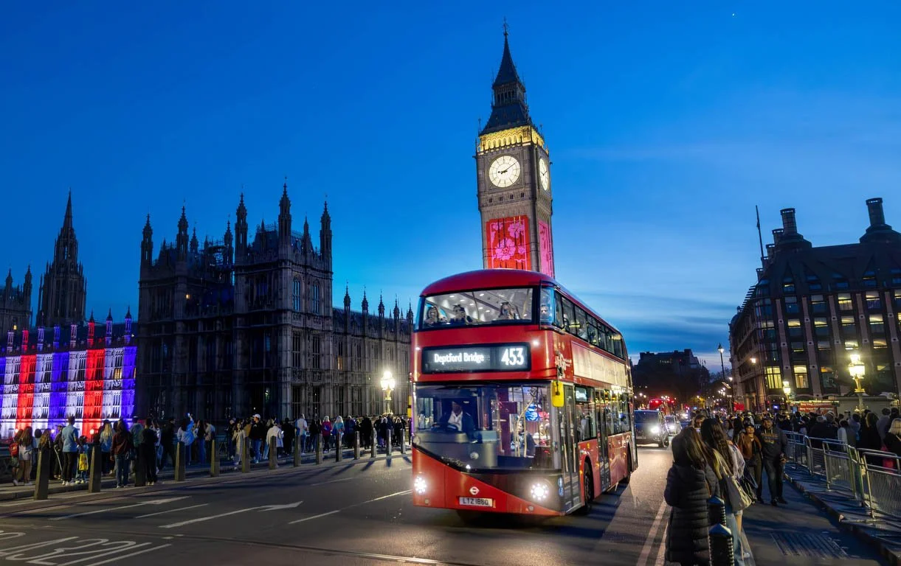
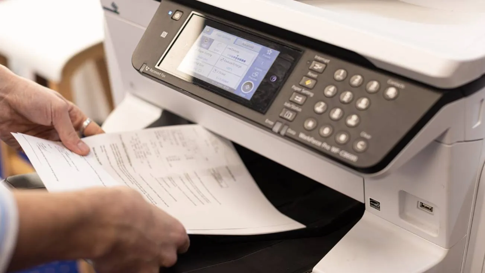

Tips For Your Trips
Travel smarter, not harder. Use these essential tips to pack right, save money, and stay safe on your journey.Bring local money, even if they accept your currency
You might think that going to Mexico or Puerto Rico or many Caribbean/Central American
countries would permit you to simply bring cash in USD and you’re right. BUT you’ll also be
ripped off with a brutal conversion rate.
So, you can just converted some US to MEX
pesos and saved so much money. It also made tipping a lot easier, as you`d have a lot more
smaller bills to spare with some pesos.
Check the weather before booking and packing

This might come as an obvious one but if your trip can be anytime in the year, try to find a
middle ground between favourable pricing for low season and favourable weather. It wouldn’t
be fun to visit a place in the middle of hurricane season, for example if you could have
avoided it! And of course, you want to pack light but also ensure you’re comfortable with
the range of temperature and weather conditions you’ll be meeting in your destination. A
thin windbreaker is the most versatile piece of clothing for colder and warmer weather
ranges.
Make it a habit of checking your weather app prior to each trip!
Try public transit

I think that walking around, eating local foods and checking out local shows/festivals aren’t the only ways to immerse yourself in the culture you’re visiting. Taking public transit is one of the top methods to see what life is like for a local resident. It was definitely interesting getting on a train in Delhi during rush hour! Or getting so well acquainted with the transit system in Paris, Japan, New York, etc.
Photocopy your documents

Photocopy your driver’s license, passport, visa, vaccination status (if required), and other important documents. Scan them in the cloud so they're accessible wherever you are.
Live every moment

Enjoy every moment of your trip and be ready for everything. If an adventure doesn't spring up unexpectedly, then it isn't an adventure. Don't fret about things that you can't control or change - let the trip take its own course. Change what you can in case the trip isn't going according to your liking but don't spoil your possibly great vacation due to unnecessary worry.